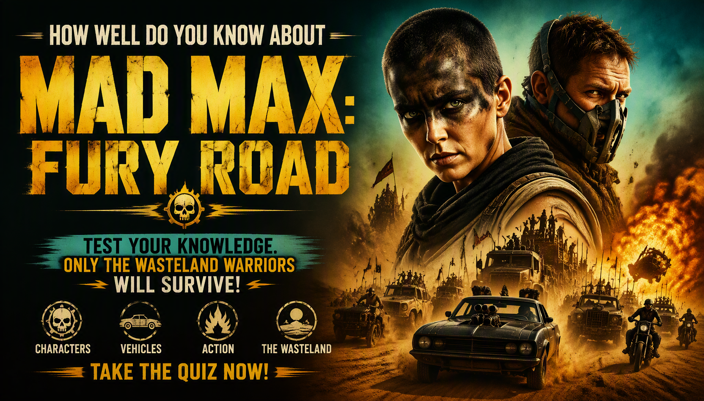

Mad Max: Fury Road Quiz
Think you can survive the Wasteland? Test your knowledge of Max, Furiosa, Immortan Joe, the War Rig, the five wives, the Citadel and major events from Mad Max: Fury Road.
Ready? See how much you remember about Max, Furiosa and the Wasteland.
This quiz contains spoilers for Mad Max: Fury Road.


About the Mad Max: Fury Road Movie Quiz
The Mad Max: Fury Road Movie Quiz is a 30-question trivia challenge for fans of the 2015 post-apocalyptic action movie Mad Max: Fury Road. The film follows Max Rockatansky and Imperator Furiosa as they attempt to escape Immortan Joe and cross the Wasteland.
The questions cover Max, Furiosa, Immortan Joe, Nux, the five wives, the War Rig, the Citadel, Gastown, the Bullet Farm, the Green Place, the Vuvalini and major events during the chase.
Some questions test major plot details, while others focus on smaller facts, vehicles, characters and locations that are easier to forget. If you remember the desperate journey across the Wasteland, this quiz gives you a chance to test your memory.
Mad Max: Fury Road Movie Details
Mad Max: Fury Road is a 2015 post-apocalyptic action film directed by George Miller and starring Tom Hardy as Max Rockatansky and Charlize Theron as Imperator Furiosa.
The story follows Furiosa as she attempts to escape Immortan Joe's Citadel with his five wives while Max becomes involved in the dangerous pursuit across the Wasteland.
The film features the Citadel, the War Rig, Gastown, the Bullet Farm, the Green Place, the Vuvalini and numerous vehicles and groups involved in the chase.
What This Quiz Covers
Max Rockatansky
Questions about Max's capture, his visions, his relationship with Furiosa and his role during the escape and final battle.
Furiosa and the Five Wives
The quiz covers Furiosa's position, her escape plan, the five wives, their relationships and important events during the journey.
The Citadel
Questions include Immortan Joe, his forces, the War Boys, the Citadel and the resources controlled by Joe's settlement.
Vehicles and the Wasteland
Test your memory of the War Rig, Gigahorse, Doof Wagon, pursuit vehicles, the Polecats and other vehicles and groups encountered during the chase.
Gastown and the Bullet Farm
Several questions cover the settlements supplying fuel and ammunition to Immortan Joe's forces.
The Green Place and the Vuvalini
The quiz also explores Furiosa's connection to the Vuvalini, the search for the Green Place and what happens when the group discovers its fate.
How the Mad Max: Fury Road Movie Quiz Works
The quiz contains 30 questions. Every question has four possible choices, but only one answer is correct. Read each question carefully and select the answer you believe is correct before continuing.
Each correct answer gives you 1 point, while an incorrect answer gives you 0 points. With 30 questions in total, your number of correct answers is converted into a final percentage out of 100%.
Your final result represents your knowledge of the movie based on your performance. The result screen also shows your correct answers, incorrect answers, total questions and accuracy percentage.
Quiz Navigation
Starting the Quiz
Select START QUIZ on the opening screen to begin. The first question will appear with four possible answers.
Selecting an Answer
Read the question and all four choices before making your decision. Select the answer you believe is correct and continue through the quiz.
Next and Back Buttons
Use Next to move forward through the questions. The Back button allows you to return to an earlier question and review your selection. Your current question number and progress are displayed as you move through the quiz.
Finishing the Quiz
Continue until you have answered all 30 questions. When you reach the end, submit your answers to finish the quiz and view your final percentage and Mad Max: Fury Road Movie Knowledge result.
Try Again and Challenge Friends
After viewing your result, select TRY AGAIN to replay the quiz and attempt a higher score. You can also use SHARE MY RESULT or CHALLENGE YOUR FRIENDS to share your result and challenge other fans.
Mad Max: Fury Road Movie Quiz FAQ
How many questions are in the quiz?
There are 30 questions in total, and every question has four possible choices.
What is the maximum score?
The maximum result is 100%. Each correct answer contributes 1 point before the score is converted into a percentage.
What topics are covered?
The quiz focuses on Mad Max: Fury Road, including Max, Furiosa, Immortan Joe, Nux, the five wives, the War Rig, the Citadel, Gastown, the Bullet Farm, the Green Place, the Vuvalini and major story details.
Is this quiz about the characters?
The quiz includes questions about important characters, but it also covers vehicles, locations, the Wasteland, the War Rig, Immortan Joe's forces and other major details from the movie.
Which movie does this quiz cover?
This quiz focuses on the 2015 post-apocalyptic action movie Mad Max: Fury Road, directed by George Miller and starring Tom Hardy as Max Rockatansky and Charlize Theron as Imperator Furiosa.
What does my score mean?
Your percentage shows how many of the 30 movie-related questions you answered correctly. A higher score indicates stronger knowledge of Mad Max: Fury Road.
Can I take the quiz again?
Yes. Select TRY AGAIN after completing the quiz to start another attempt and try to improve your score.
Can I challenge my friends?
Yes. Select CHALLENGE YOUR FRIENDS after completing the quiz to share the challenge and see whether your friends can beat your score.
Spoiler Warning
This quiz contains spoilers for Mad Max: Fury Road. Questions may reveal major characters, Furiosa's plan, Immortan Joe, the five wives, the War Rig, the Citadel, the Green Place, the final chase and other important details from the movie.
If you have not watched Mad Max: Fury Road, consider watching the movie before taking the quiz to avoid having important story details spoiled.